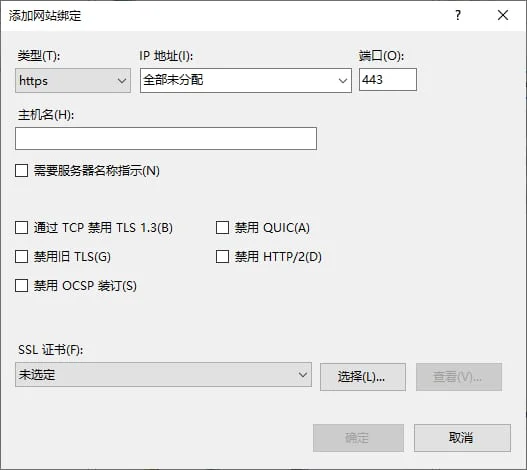

请访问原文链接：TLSv1.3 Support：主流 Web 客户端和服务端对 TLSv1.3 的支持情况（2021版） 查看最新版。原创作品，转载请保留出处。
作者主页：sysin.org
2021 年 8 月发布的 Windows Server 2022 正式支持 QUIC 和 TLS 1.3 相关特性。至此，主流产品已经全部支持 TLSv1.3 协议。

TLS 1.3 由 IETF 于 2018 年 8 月正式发布。
1. 为什么要使用 TLSv1.3
SSL：Secure Sockets Layer 安全套接字层。
TLS：Transport Layer Security，传输层安全。
TLS 是 IETF 在 SSL3.0 基础上设计的协议，实际上相当于 SSL 的后续版本。
TLS（Transport Layer Security）是一种加密协议，旨在通过 IP 网络提供安全通信。它是当今非常常见的协议，用于保护 Web 浏览器和 Web 服务器之间的 HTTP 通信。当使用 TLS 保护 HTTP 时，它通常被称为 HTTPS（HTTP Secure）。TLS/SSL 是安全传输层协议，是介于 TCP 和 HTTP 之间的一层安全协议，不影响原有的 TCP 协议和 HTTP 协议。
TLS 1.3 是时隔九年对 TLS 1.2 等之前版本的新升级，也是迄今为止改动最大的一次。针对目前已知的安全威胁，IETF（Internet Engineering Task Force，互联网工程任务组）制定 TLS 1.3 的新标准，使其有望成为有史以来最安全，但也最复杂的 TLS 协议。
TLS 1.3 与之前的协议有较大差异，主要在于：
- 相比过去的的版本，引入了新的密钥协商机制 — PSK
- 支持 0-RTT 数据传输，在建立连接时节省了往返时间
- 废弃了 3DES、RC4、AES-CBC 等加密组件，废弃了 SHA1、MD5 等哈希算法
- ServerHello 之后的所有握手消息采取了加密操作，可见明文大大减少
- 不再允许对加密报文进行压缩、不再允许双方发起重协商
- DSA 证书不再允许在 TLS 1.3 中使用
对比旧协议中的不足，TLS 1.3 确实可以称得上是向前迈了一大步。既避免之前版本出现的缺陷，也减少了 TLS 握手的时间。
总结一下，TLS 1.3 与以前的版本相比具有如下两个大的优势：更快的访问速度和更强的安全性！
TLS 1.0 和 TLS 1.1 是分别于 1996 年和 2006 年发布的老版协议，使用的是弱加密算法和系统。比如 SHA-1 和 MD5，这些算法和系统十分脆弱，存在重大安全漏洞，容易受到降级攻击的严重影响，而在 2008 年和 2017 年分别发布了协议的新版本，即 TLS 1.2 和 TLS 1.3，无疑更优于旧版本，使用起来也更安全。
2018 年，在春季 TLS 1.3 版本发布之后，苹果、谷歌、Mozilla 和微软四大浏览器制造商于 2018 年 10 月联合宣布计划在 2020 年初取消对 TLS 1.0 和 TLS 1.1 的支持。
主流浏览器客户端都提供了禁用 TLS 1.0 和 TLS 1.1 协议的大致期限：
| Browser Name | Date |
|---|---|
| Microsoft IE and Edge | First half of 2020 |
| Mozilla Firefox | March 2020 |
| Safari/Webkit | March 2020 |
| Google Chrome | January 2020 |
备注：由于受 COVID-19 影响，浏览器厂商推迟了 TLS 1.0 和 1.1 版本协议的淘汰时间。
参考：
- Modernizing TLS connections in Microsoft Edge and Internet Explorer 11 : https://blogs.windows.com/msedgedev/2018/10/15/modernizing-tls-edge-ie11/
- Removing Old Versions of TLS : https://blog.mozilla.org/security/2018/10/15/removing-old-versions-of-tls/
- Deprecation of Legacy TLS 1.0 and 1.1 Versions: https://webkit.org/blog/8462/deprecation-of-legacy-tls-1-0-and-1-1-versions/
- Modernizing Transport Security: https://security.googleblog.com/2018/10/modernizing-transport-security.html
- Recommendations for Secure Use of Transport Layer Security (TLS) and Datagram Transport Layer Security (DTLS): https://tools.ietf.org/html/rfc7525
2. 客户端支持
2.1 浏览器（Chrome、Firefox、Safari）
现代主流操作系统（Unix、Linux、Windows，包括移动操作系统 Andriod 和 iOS）中的浏览器及相关组件都可以支持 TLS 1.3。
最低版本要求如下：
Modern: Modern clients that support TLS 1.3, with no need for backwards compatibility
| Configuration | Firefox | Android | Chrome | Edge | Internet Explorer | Java | OpenSSL | Opera | Safari |
|---|---|---|---|---|---|---|---|---|---|
| Modern | 63 | 10.0 | 70 | 75 | – | 11 | 1.1.1 | 57 | 12.1 |
参看：https://wiki.mozilla.org/Security/Server_Side_TLS
Microsoft Internet Explorer 不支持 TLS 1.3，其替代产品 Microsoft Edge 沿袭 Google Chrome 相关特性。
2.2 curl
curl 是请求访问 Web 服务器的命令行工具，7.52.0 & + 版本支持 TLSv1.3。
7.52.0 - December 21 2016，curl: introduce the --tlsv1.3 option to force TLS 1.3
使用参数 --tlsv1.3，可以通过 curl --help 查看是否支持该参数
3. 服务端支持
3.1 F5 BIG-IP
BIG-IP® 系统是一组应用交付产品，它们协同工作以确保高可用性、改进的性能、应用安全和访问控制。BIG-IP 系统的主要功能之一是将不同类型的协议和应用程序流量定向到适当的目标服务器。系统通过其 Local Traffic Manager™ 模块实现这一点，该模块可以将流量直接转发到负载平衡服务器池，或将流量发送到下一跳路由器、路由器池或直接发送到网络上的选定节点。BIG-IP 系统上可用的其他模块提供关键功能，例如将安全策略应用于网络流量、加速 HTTP 连接以及优化广域网中的连接。
F5 BIG-IP 当前 LTS 版本 14.1.0、15.1.0、16.1.0 及以上版本都可以完整支持 TLSv1_3。
BIG-IP v14 开始支持 TLSv1_3（In BIG-IP 14.0.0, the BIG-IP system adds limited support for Transport Layer Security (TLS) 1.3. Starting in BIG-IP 14.1.0.1 and later, this support was updated to provide production level support for TLS 1.3.）
By default, TLS 1.3 is disabled. To enable TLS 1.3, you must remove the No TLSv1.3 option from the Enabled Options list in the Configuration utility for the Client SSL and Server SSL profiles
You can view a list of TLS 1.3 supported ciphers and groups using the following TMOS Shell (tmsh) commands:
-
To view the supported client-side ciphers, use the following command:
tmsh run util clientssl-ciphers TLSv1_3
-
To view the supported server-side ciphers, use the following command:
tmsh run util serverssl-ciphers TLSv1_3
配置启用 TLSv1_3 的步骤如下：
编辑 ClientSSL Profle：
Ciphers：选择 Cipher Group，下拉选择 f5-secure
Options：Options List…
Enabled Options，
Disable No TLSv1.3
添加，No TLSv1 和 TLSv1.1，保留默认的 “Don’t insert empty fragments”
注意：TLSv1_3 是 F5 产品中的写法，与其他开源产品中的 TLSv1.3 不同。
3.2 Windows & IIS
Windows® Server 的 Internet 信息服务 (IIS) 是一种灵活、安全且可管理的 Web 服务器，用于托管 Web 上的任何内容。从媒体流到 Web 应用程序，IIS 的可扩展和开放架构已准备好处理最苛刻的任务。
2021 年 8 月发布的 Windows Server 2022 正式支持 HTTP/3、QUIC 和 TLS 1.3 相关特性。
在 Windows Server 2022 中的 IIS 新建一个站点将默认启用 TLS 1.3 以及 QUIC，除非手动勾选禁用。

备注：IIS 10 & Windows Server 2019 以及之前版本无法支持，参看。
3.3 Nginx
nginx [engine x] 是一个 HTTP 和反向代理服务器，邮件代理服务器，和一个通用的 TCP/UDP 代理服务器，最初由 Igor Sysoev 编写。在许多负载很重的俄罗斯网站上运行了很久，包括 Yandex、Mail.Ru、VK 和 Rambler。根据 Netcraft 的说法，nginx 服务或代理 22.36% 最繁忙的网站 (2021 年 11 月)。
以下是一些成功案例：Dropbox、Netflix、Wordpress.com、FastMail.FM。
Nginx 1.13.0 开始支持 TLSv1.3（2017-04-25 nginx-1.13.0 mainline version has been released. ）。
- The
TLSv1.1andTLSv1.2parameters (1.1.13, 1.0.12) work only when OpenSSL 1.0.1 or higher is used. - The
TLSv1.3parameter (1.13.0) works only when OpenSSL 1.1.1 built with TLSv1.3 support is used.
More info on the NGINX documentation
参考配置：启用 HTTP/2、TLSv1.3、推荐的 Ciphers、HSTS
1 | server { |
NGINX 1.21.4 引入了 Kernel TLS 特性 （introduces support for kTLS ）大幅提高了 TLS 传输性能，要求 OpenSSL 3.0 + FreeBSD 13/Linux Kernel 4.17+，详见：Improving NGINX Performance with Kernel TLS and SSL_sendfile( )。
3.4 Apache httpd
Apache HTTP Server 项目致力于开发和维护一个用于现代操作系统的开源 HTTP 服务器，包括 UNIX 和 Windows。该项目的目标是提供一个安全、高效和提供与当前 HTTP 同步的 HTTP 服务的可扩展服务器标准。
Apache HTTP 服务器（“httpd”）于 1995 年推出，自 1995 年以来一直是 Internet 上最受欢迎的 Web 服务器。1996 年 4 月。它在 2020 年 2 月庆祝了它作为一个项目的 25 岁生日。
版本要求：
- Apache version
2.4.36or greater. (搜索网上文章传言 2.4.38 有误！) - OpenSSL version
1.1.1or greater.
CentOS 8 和 Ubuntu 20.04 自带软件包满足要求，低版本需要编译安装。
1 | [root@c8 ~]# openssl version |
1 | root@u20:~# openssl version |
启用 TLS 1.3 和 1.2：
The Apache version 2.4.36 or higher versions support TLS v1.3. You must upgrade Apache packages before enabled TLS 1.3 in SSL settings.
1 | SSLProtocol -all +TLSv1.2 +TLSv1.3 |
配置项如下所示:
1 | <VirtualHost *:443> |
记得重启 Apache 服务才能生效。
3.5 Apache Tomcat
Apache Tomcat® 软件是 Jakarta Servlet、Jakarta Server Pages、Jakarta Expression Language、Jakarta WebSocket、Jakarta Annotations 和 Jakarta Authentication 规范的开源实现。这些规范是 Jakarta EE 平台的一部分。Jakarta EE 平台是 Java EE 平台的演变。Tomcat 10 及更高版本实现了作为 Jakarta EE 一部分开发的规范。Tomcat 9 及更早版本实现了作为 Java EE 一部分开发的规范。
当前最新的 Tomcat 7.0+ Release 都可以支持 TLSv1.3，具体版本如下：
2018-11-15 Tomcat 7.0.92 Released
- Support for TLSv1.3 when used with a JRE or OpenSSL version that supports it
2018-11-07 Tomcat 8.5.35 Released
- support for TLSv1.3 when used with a JRE or OpenSSl version that supports it
2018-11-07 Tomcat 9.0.13 Released
- support for TLSv1.3 when used with a JRE or OpenSSL version that supports it
Tomcat 10.0 当然支持（最早发布的版本：2020-02-20 Tomcat 10.0.0-M1 (markt)）。
请注意，只有在使用实现 TLSv1.3 的 JVM 时，JSSE 才支持 TLSv1.3。
配置示例：
编辑 server.xml 配置文件，SSLHostConfig protocols= 字段如下：
1 | <!-- Define an SSL/TLS HTTP/1.1 Connector on port 443 with HTTP/2 |
重启 Tomcat 生效。
protocols 写法：
1 | The names of the protocols to support when communicating with clients. This should be a list of any combination of the following: |
3.6 HAProxy
HAProxy 是一种免费、快速且可靠的反向代理，可为基于 TCP 和 HTTP 的应用程序提供高可用性、负载平衡和代理。它特别适用于流量非常高的网站，并为世界上大部分访问量最大的网站提供支持。多年来，它已成为事实上的标准开源负载均衡器，现在随大多数主流 Linux 发行版一起提供，并且通常默认部署在云平台中。由于它不做广告，我们只知道它在管理员报告时被使用:-)
要求：HAProxy 1.8.1 及以上，OpenSSL 1.1.1 及以上。
参数：ssl-default-bind-ciphersuites，参看 https://sysin.org/blog/get-a-plus-rating-on-ssl-test/ SSL cipher 部分的描述。
3.7 Varnish with Hitch
Varnish Cache 是一种 web 应用程序加速器，同时以被用于缓存的 HTTP 反向代理而闻名。Varnish HTTP/2 前端通过 Hitch 代理实现。Hitch 是 Varnish Software 开发的基于 libev 的高性能 SSL/TLS 开源代理软件。
笔者写了一篇文章描述了整个配置过程，访问这里查看：Varnish with Hitch HTTP/2 implement on CentOS 8.0
hitch 参考配置：Ciphers，HTTP/2 和 TLSv1.3
版本要求：
- Cache 5.0 开始实验性的支持 HTTP/2
- Varnish 6.0 完整支持 HTTP/2
- hitch 1.5 版本开始支持 TLS 1.3

文章用于推荐和分享优秀的软件产品及其相关技术，所有软件默认提供官方原版（免费版或试用版），免费分享。对于部分产品笔者加入了自己的理解和分析，方便学习和研究使用。任何内容若侵犯了您的版权，请联系作者删除。如果您喜欢这篇文章或者觉得它对您有所帮助，或者发现有不当之处，欢迎您发表评论，也欢迎您分享这个网站，或者赞赏一下作者，谢谢！
 支付宝赞赏
支付宝赞赏
 微信赞赏
微信赞赏
赞赏一下